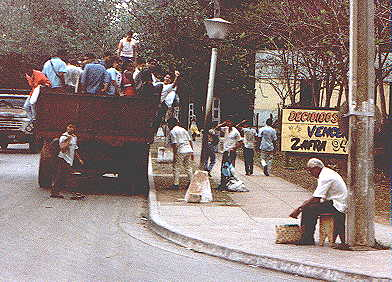
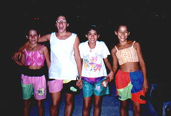
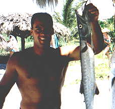
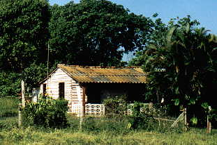
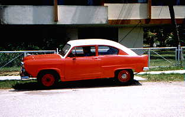
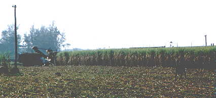

Photos taken in Cuba - Page Two

A fairly common method of public transportation.

My daughter and I walked behind these young girls in Varadero,
listening to their laughter and singing, while walking in almost total darkness,
and I wondered where in the United States this could happen.

Our friend on the beach.

When Cuba opens again to the United States,
places like this will be sold within hours.

It's a... no, it couldn't be... but it is...
A Henry J!

In the canefields
Next Page
or
Back to the Photo Tour